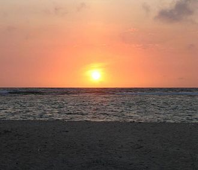
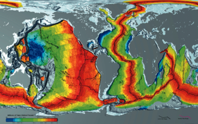

|
Curiosidades |
VOLTAR AO MENU |
 |
Ciclo da águaA partir da formação do oceano primitivo, houve a formação da hidrosfera. A água começou a sofrer uma série de processos na superfície do planeta, dando início ao ciclo hidrológico. Na atuais condições encontradas na superfície da Terra, a água encontra-se na forma líquida, ou seja, um estado intermediário entre as fases gasosa (vapor) e o sólida (gelo). Essa água está exposta a uma série de intempéries, como o calor emanado a partir da crosta terrestre, os raios solares, os ventos. Esses fenômenos promovem a evaporação e a precipitação da água sobre o próprio oceano e os continentes. A circulação da água na superfície da Terra foi responsável pela salinização da água do mar e o acúmulo de sedimento no leito marinho. |
|  |
Aumento da TemperaturaEm 20 de julho de 2009, cientistas do Centro Nacional de Dados Climáticos dos Estados Unidos, informaram à imprensa que os oceanos estão com a temperatura média de 17 °C, a mais alta desde 1880, quando iniciou-se os registros. Graças ao calor da Luz solar, que está aumentando cada vez mais, com o rompimento da camada de ozônio. |
|  |
Morfologia do fundo marinhoA margem continental é a porção do fundo marinho que está mais próxima a terra firme. Divide-se em:
|